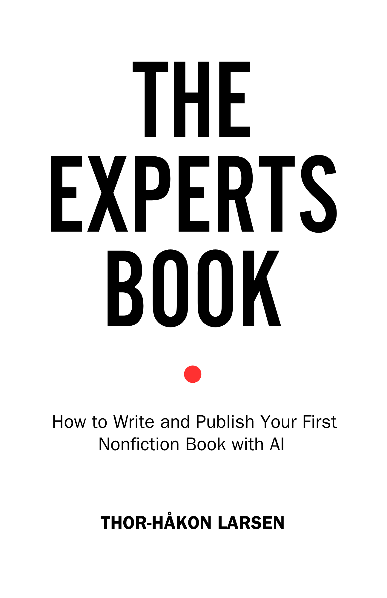

The Expert’s Book
How to Write and Publish Your First Nonfiction Book with AIHvordan skrive og publisere din første sakprosabok med AI
You have the expertise. You have the notes. You do not have the book. The Expert’s Book is the first handbook that combines a full self-publishing pipeline with AI as serious infrastructure — not a shortcut.Du har ekspertisen. Du har notatene. Du har ikke boken. The Expert’s Book er den første håndboken som kombinerer en full selvpubliserings-pipeline med AI som seriøs infrastruktur — ikke en snarvei.
About the BookOm boken
The average self-published nonfiction book sells 250 copies. An expert-authored book with a real plan sells that in its first week. The difference is not talent — it’s system. The Expert’s Book is a step-by-step handbook for consultants, advisors, and professionals who have deep domain expertise and want to turn it into a published book. It covers the complete journey: validating your idea before you write a word, building an AI writing system that preserves your voice, a research verification protocol that ensures every claim holds up, a four-pass editing framework (developmental, line, copy, proof), the economics of self-publishing, and a 30-day launch plan. Includes an AI Prompt Library, Decision Frameworks, Tools Guide, and case studies from real expert-authored books.
Gjennomsnittlig selvpublisert sakprosabok selger 250 eksemplarer. En ekspertskrevet bok med en reell plan selger det i løpet av første uke. Forskjellen er ikke talent — det er system. The Expert’s Book er en trinn-for-trinn-håndbok for konsulenter, rådgivere og fagpersoner med dyp domenekompetanse som vil gjøre den om til en publisert bok. Den dekker hele reisen: validering av ideen din før du skriver et ord, bygging av et AI-skrivesystem som bevarer stemmen din, en forskningsverifiseringsprotokoll som sikrer at alle påstander holder, et firetrinns redigeringsrammeverk, selvpubliseringsøkonomi, og en 30-dagers lanseringsplan. Inkluderer AI-promptbibliotek, beslutningsrammeverk, verktøyguide og casestudier.
What You’ll LearnHva du vil lære
- A tested system for validating your book idea before investing months of workEt testet system for å validere bokideen din før du investerer måneder
- How to use AI as a writing partner that preserves your authentic voiceHvordan bruke AI som skrivepartner som bevarer din autentiske stemme
- Research verification protocols that ensure every claim holds up to scrutinyForskningsverifiseringsprotokoller som sikrer at alle påstander holder
- A four-pass editing stack: developmental, line edit, copyedit, proofreadFiretrinns redigeringsstakk: strukturell, språklig, korrektur, sluttkontroll
- The real economics of self-publishing (potential $75K–$300K from a single title)Den reelle økonomien bak selvpublisering (potensielt 750K–3M NOK fra én tittel)
- A 30-day launch plan with concrete daily actionsEn 30-dagers lanseringsplan med konkrete daglige handlinger
Who This Book Is ForHvem boken er for
For consultants, advisors, executives, academics, and professionals with deep domain expertise and a message worth sharing — who have never written a book but know they should.
For konsulenter, rådgivere, ledere, akademikere og fagpersoner med dyp domenekompetanse og et budskap verdt å dele — som aldri har skrevet en bok, men vet de burde.
DetailsDetaljer
LanguageSpråk
EnglishEngelsk
GenreSjanger
Writing & PublishingSkriving & publisering
ComparableSammenlignbare
The Scribe Method (Tucker Max), Write Useful Books (Rob Fitzpatrick), Co-Intelligence (Ethan Mollick)
Stay in the LoopHold deg oppdatert
Get notified when this title is available.Få beskjed når denne tittelen er tilgjengelig.
SubscribeAbonner